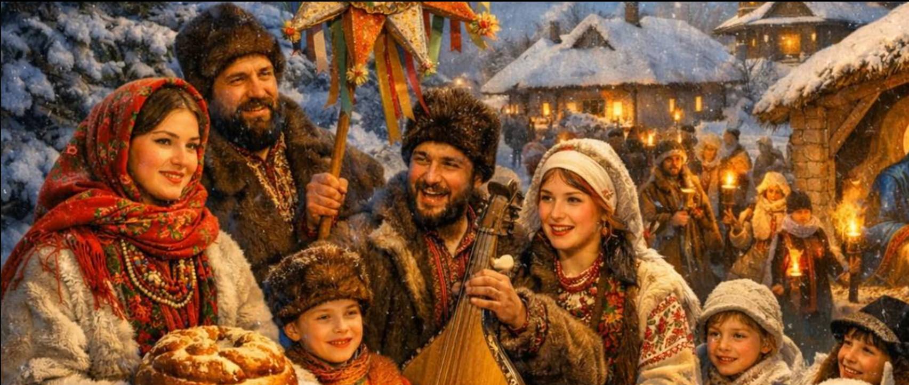
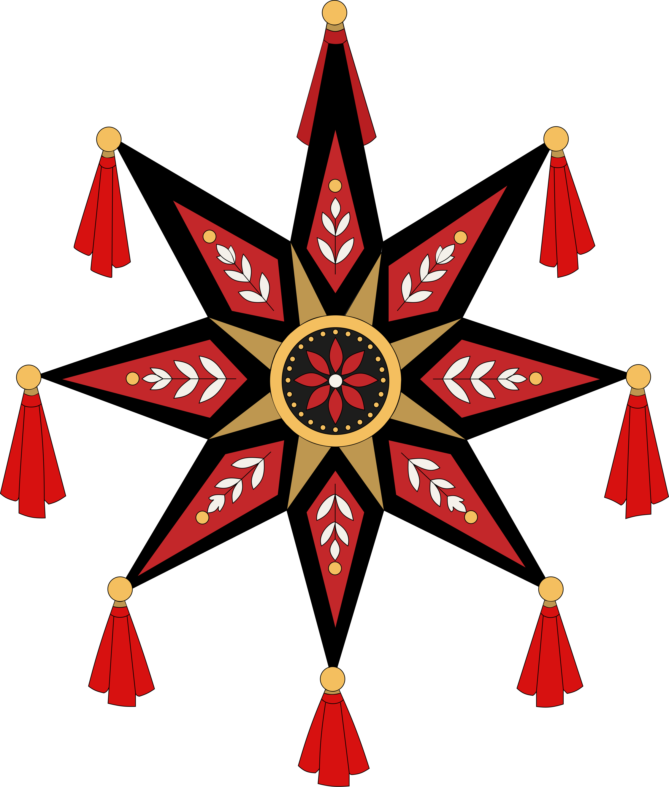

Що таке Різдво?
Різдво Христове — одне з найважливіших християнських свят, присвячене народженню Ісуса Христа. Воно символізує надію, любов, добро та духовне оновлення.
В Україні Різдво є не лише релігійним святом, а й важливою частиною культурної спадщини. З покоління в покоління українці передають різдвяні звичаї: готують святкові страви, прикрашають оселі, співають колядки та збираються всією родиною за спільним столом.
Особливу атмосферу Різдва створюють давні народні символи — різдвяна зірка, дідух, вертеп і традиційні обрядові пісні. Кожен із них нагадує про зв'язок поколінь, родинні цінності та багатство українських традицій.
На Вінниччині, як і в інших регіонах України, різдвяні святкування поєднують християнські традиції з народними обрядами Поділля. Саме цим звичаям, святковим стравам та історії Різдва присвячений наш сайт.
